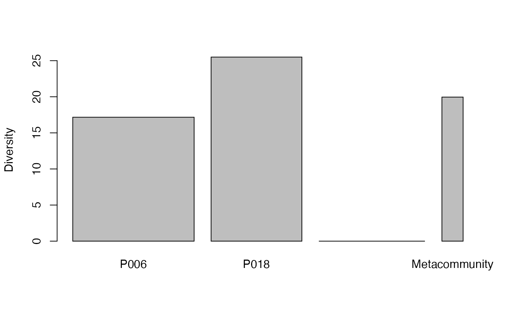

AlphaDiversity.RdCalculates the eeduced-bias total alpha diversity of order \(q\) of communities.
AlphaDiversity(MC, q = 1, Correction = "Best", Tree = NULL, Normalize = TRUE,
Z = NULL, CheckArguments = TRUE)A MetaCommunity object.
A number: the order of diversity. Default is 1 for Shannon diversity.
A string containing one of the possible corrections accepted by AlphaEntropy or "None" or "Best", the default value.
An object of class hclust, phylo, phylog or PPtree. The tree must be ultrametric.
If TRUE (default), diversity is not affected by the height of the tree.
If FALSE, diversity is proportional to the height of the tree.
A relatedness matrix, i.e. a square matrix whose terms are all positive, strictly positive on the diagonal. Generally, the matrix is a similarity matrix, i.e. the diagonal terms equal 1 and other terms are between 0 and 1.
Logical; if TRUE, the function arguments are verified. Should be set to FALSE to save time when the arguments have been checked elsewhere.
Entropy is calculated by AlphaEntropy and transformed into diversity.
An MCdiversity object containing diversity values of each community and of the metacommunity.
Marcon, E., Scotti, I., Herault, B., Rossi, V. and Lang, G. (2014). Generalization of the partitioning of Shannon diversity. PLOS One 9(3): e90289.
Marcon, E., Herault, B. (2015). Decomposing Phylodiversity. Methods in Ecology and Evolution 6(3): 333-339.
Marcon, E., Zhang, Z. and Herault, B. (2014). The decomposition of similarity-based diversity and its bias correction. HAL hal-00989454(version 3).
# Load Paracou data (number of trees per species in two 1-ha plot of a tropical forest)
data(Paracou618)
# Calculate Simpson alpha diversity
summary(AlphaDiversity(Paracou618.MC, 2))
#> Neutral alpha diversity of order 2 of metaCommunity Paracou618.MC
#> with correction: Best
#>
#> Diversity of communities:
#> P006 P018
#> 38.78158 53.97842
#> Average diversity of the communities:
#> [1] 44.09399
# Compare without correction
summary(AlphaDiversity(Paracou618.MC, 2, Correction = "None"))
#> Neutral alpha diversity of order 2 of metaCommunity Paracou618.MC
#> with correction: None
#>
#> Diversity of communities:
#> P006 P018
#> 36.65653 48.67684
#> Average diversity of the communities:
#> [1] 40.98793
# Estimate phylogenetic Simpson alpha diversity
summary(AlphaDiversity(Paracou618.MC, 2, Tree = Paracou618.Taxonomy) -> e)
#> HCDT alpha diversity of order 2 of metaCommunity Paracou618.MC with correction:
#> Best
#>
#> Phylogenetic or functional diversity was calculated according to the tree
#> Paracou618.Taxonomy
#>
#> Diversity is normalized
#>
#> Diversity of communities:
#> P006 P018
#> 17.16423 25.49632
#> Average diversity of the communities:
#> [1] 19.95488
plot(e)
